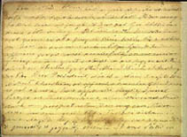
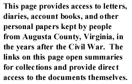

|  |  |
To search select personal papers by keyword, author, or subject,
go to the letters or diaries search pages.
In a letter to her brother Eddie on December 11, 1869, Amelia (her last name is unknown) described her school, African American students, and their future projects.
John B. Baldwin, a former Confederate colonel, was active in postwar politics. Baldwin served in the Virginia General Assembly and numbered among the "Committee of Nine." In this pamphlet (1866) published by the Staunton Spectator, Baldwin and other prominent Virginians give contrasting accounts of his meeting with President Lincoln on April 4, 1861, to discuss keeping Virginia in the Union. You may also read one prewar letter (1861) written by Baldwin.
In a letter to his roommates on February 12, 1867, Buchanan describes a recent party, delivers generally lighthearted news about acquaintances, and accuses an African-American woman of careless treatment of a child.
This collection of postwar letters (1865-1870) contains the correspondence of the Evans and Sibert families of Augusta County, Virginia. It includes many exchanges between David Evans and Mary Sibert that greatly details their relationship and their eventual marriage.You may also read the prewar letters (1856-1861) and the wartime letters (1861-1865) of the Evans-Sibert Family.
The six postwar letters (1865-1867) in this collection are addressed to Hugh Gilkeson, written by his brothers Andrew and David, and also his son Willie. The letters cover African-American attitudes toward contract labor, taxes, the economy, farming, and other local news. You may also read the prewar letters (1858) and the wartime letters (1862-1864) of the Gilkeson Family.
In this collection of six postwar letters (1870), Jedediah Hotchkiss writes to his loved ones at home about his office and lodgings in Lexington, Virginia. You may also read one prewar letter (1860) of the Hotchkiss family and a large collection of wartime letters (1861-1865) of the Hotchkiss family.
The Longs were a farming family of Augusta County, Virginia. In this letter (1867) to Cynthia Long, Mary Lamon describes recent church activities and discusses her beau's recent actions. You may also read the wartime letters (1864) of the Long brothers to Cynthia.
Francis McFarland was a Presbyterian minister in Augusta County, where he lived with his wife and two sons after the war. McFarland's diary (1859-1869) slows in the years after the close of the war, as his health declines. Commenting occasionally about Reconstruction, McFarland spends most of his time discussion daily life and his ongoing health problems. He briefly describes how the family brought the remains of Robert--McFarland's son who died fighting for the Confederacy--back to Augusta County, and notes his dealings with the Freedmen's Bureau agent in Staunton. You may also read one prewar letter (1861) and several wartime letters (1862-1864) of the McFarland family.
Near the end of the war, or soon thereafter, Charles W. McGuffin and Mary C. Baylor, both Augusta County residents, married and lived on the Baylor family farm. These postwar letters (1865-1884) discuss the immediate aftermath of the war and family matters in the 1880s. You may also read one prewar letter (1854) and several wartime letters (1861-1865) of the McGuffin and Baylor families.
John Nadenbousch wrote about the conditions in Augusta County immediately after the end of the war, including his distaste for the loyalty oath, postwar economic hardships, and the local political climate. John continued to live in Staunton and run the American Hotel as late as 1866, while his wife Hester remained in Berekley County, West Virginia. You may also read the wartime correspondence of the Nadenbousch family.
In a letter on August 9, 1868, Sue Page begged her family for more correspondence, stating that she will never see them again in person and craves contact.
In a letter to George McEndree on December 7, 1887, Ryan discusses the battles of their company and regiment, also sending along a copy of their old company's muster roll, noting that the previous holder had been wounded leaving a large "splotch" of blood on McEndree's name. Referring to the war, he expresses the belief that "we were not whipped but 'wore ourselves out whipping the other side'."
The Smileys owned a farm in Augusta County, Virginia. Most of the letters in this postwar collection are between Letitia Smiley and her sister Mary. You may also read the wartime letters (1861-1865) of the Smiley family.
Alexander H. H. Stuart, a prominent lawyer and politician of Augusta County, Virginia, had favored the Union, but went with his state in the Civil War. In this postwar letter (1873), Stuart asks cousin Ellen for information, explaining that he intends to write a history of their family. He outlines some facts about the first Stuart to come to America. You may also read the prewar letters (1848-1861) and wartime letters (1861-1863) of A. H. H. Stuart.
In these two letters (1868, 1871) to their uncle, James H. and Kate Trotter discuss family matters, including the funeral of an uncle and an illness in the family.
Nicholas K. Trout was a prominent attorney in Staunton in Augusta County, Virginia. In these postwar letters (1868-1869) to Alfred Chapman, Trout addresses various legal matters. You may also read one prewar letter (1859) in the Trout collection.
Joseph A. Waddell lived in Staunton in Augusta County, Virginia. In his diary (1865), Waddell offers a vivid portrayal of postwar life in Staunton. His diary includes commentary on early restoration efforts for Virginia, interactions between former Confederates and Unionists, and the status of race relations. The diary also includes entries for the prewar (1855-1861) and war years (1861-1865).